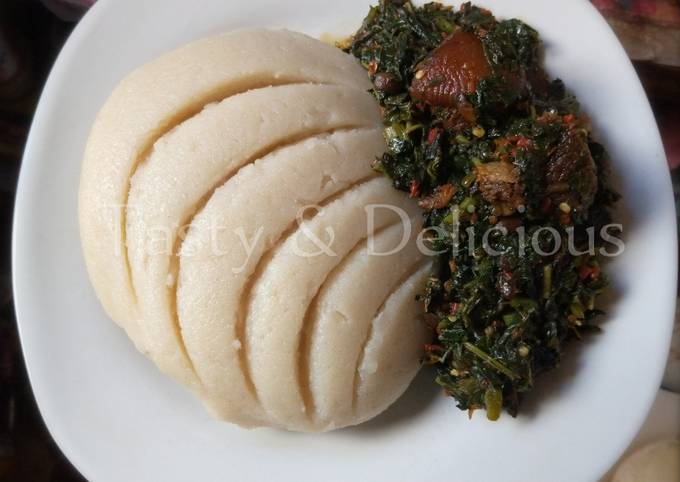

Semovita and Vegetable Soup

Description
Semovita: White, cooked, paste, soft.
Vegetable Soup: Greenish, chopped, thick.
Ingredients
- Semovita
- Red oil
- Seasonings e.g Curry, Thyme, Maggi etc.
- Crayfish, Dry fish or meat
- Fresh chopped vegetables
Steps in making Semovita
- Add 2 cups of water to pot and wait till it boils.
- Add some potash.
- Pour the amount of Semovita to be used into the boiling water.
- Stir the mixture together.
- Keep stiring until it becomes thick and soft.
Steps in making Vegetable Soup
- Pour red oil into pot and leave to heat for some minutes.
- Add the seasonings and necessary ingredients of your liking.
- Wash the chopped vegetables in warm water.
- Add the chooped vegetable to mixture of red oil and seasonings
- Stir the mixture uniformly
- Cook for about 15-20 mins.